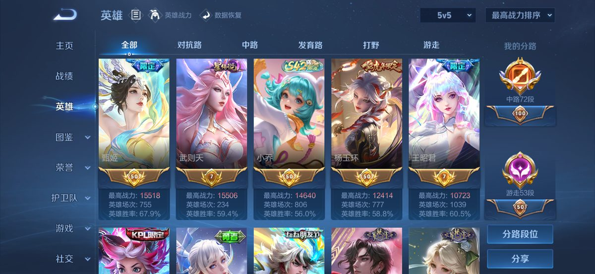
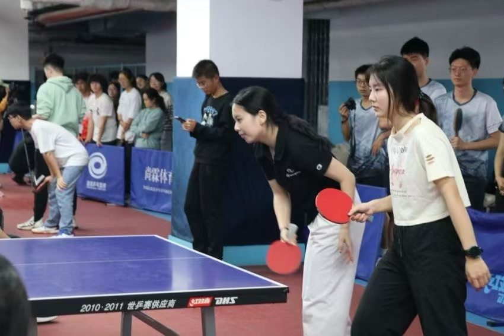
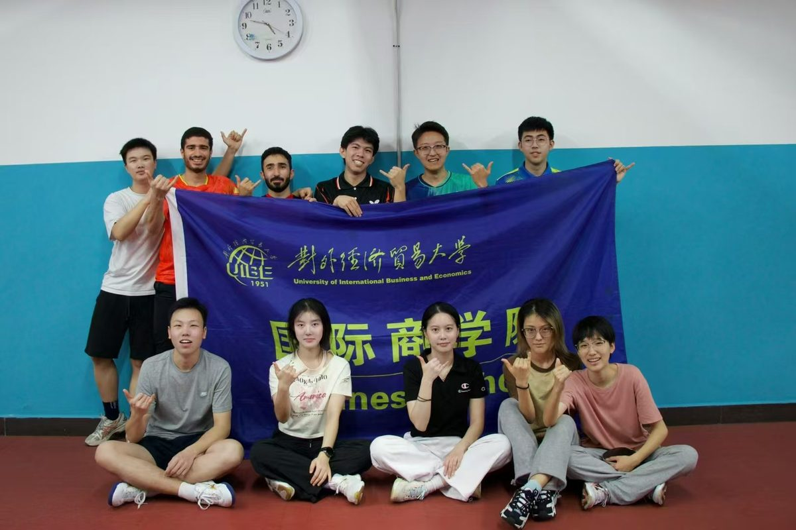
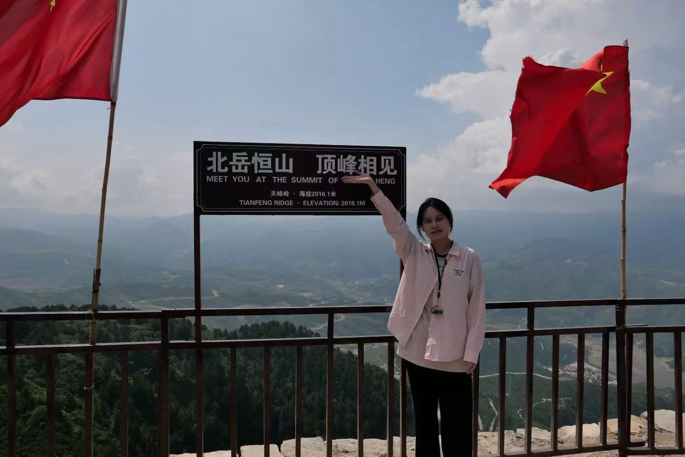

关于我
会计专硕在读，本硕均就读于对外经济贸易大学会计专业，硕士专业排名前 5%。三段实习横跨互联网、信托与投行，都落在真实的财务合规与数据核验上。
在字节跳动国际支付财务核算组做跨境支付的监管合规与核算核验——维护 Safeguarding 监管台账、负责多主体监管报表报送、搭建会计科目映射、验收业务看板数据，并把流程沉淀成 4 份 SOP 手册；在重庆国际信托资产管理部做信托与私募产品的估值核算、标的准入尽调与信用研判；在民生证券上海投行二部参与 IPO 财务核查，完成外围流水核查、函证程序与内控穿行测试。
习惯风险导向与交叉校验：不轻信系统输出，报表报送前逐项复核、看板数据用公式手工复现、函证差异追到凭证级别。对数字敏感，能在多任务并行、快节奏的现场交付中守住质量；上手快、能扛事，把手上每一件事做到底。
教育背景
对外经济贸易大学 · 国际商学院
2025.09 – 2027.06
会计专硕（MPAcc） · 硕士研究生 · 保送推免 · 专业排名 1/144（前 5%）· 综合均分 92.94/100
主修课程（90 分以上）
- 财务会计理论与实务 97
- 政府审计与内部审计 98
- 管理经济学 96
- 人力资源管理 96
- 舞弊审计与社会责任专题 95
- 投资银行 95
- 管理会计理论与实务 94
- 专业学位硕士论文写作 94
- 全面预算管理 93
- 人工智能 93
- 金融法理论与制度 92
- 商业伦理与社会责任 92
- 高级财务分析 91
- 财务管理理论与实务 90
对外经济贸易大学 · 国际商学院
2021.09 – 2025.06
会计学 · 本科 · 管理学学士 · 专业排名 11/153（前 10%）· 综合均分 91.76/100
主修课程（90 分以上）
- 会计实务与实验 97
- 业财融合管理会计 97
- 商务数据处理与分析 97
- 财务会计 95
- 商业伦理 95
- 微观经济学 95
- 税务会计与税务筹划 94
- 商务数据分析 94
- 企业财务报表分析 92
- 大数据与会计应用 92
- 组织行为学 92
- 高等数学（二）92
- 高等数学（一）93
深圳实验学校高中部
2018.09 – 2021.06
高中 · 广东省深圳市
科研与论文
审计委员会承接监事会职能——会计界研究文献综述
2026.05 – 2026.07
中国神华项目 · 文献综述助理
围绕新《公司法》下审计委员会承接监事会职能这一国企公司治理改革议题开展专题文献研究，系统研读 40 篇会计领域核心文献，从制度演进、改革动因、承接困局、优化路径四个维度形成文献综述，为课题组的政策建议提供文献支撑。
北京市场化碳减排机制研究
2025.08 – 2025.09
北京市社会科学基金决策咨询项目（22JCC093） · 课题研究助理
课题基于基础理论剖析、国际经验借鉴与北京现状调研，以价格机制为核心，研究碳排放权交易市场的市场化减排路径；参与资料检索、案例整理与章节撰写，形成面向决策咨询的研究报告。
中美贸易摩擦对北京企业海外投资的影响及应对研究报告
2024.11 – 2025.01
对外经济贸易大学国际商学院课题组（全篇十二章、253 页） · 第十二章独立撰写
独立完成第十二章「中美贸易摩擦背景下其他企业海外投资」，梳理贸易摩擦对企业海外投资决策的影响机制与应对路径，形成完整章节文本并纳入课题组总报告。
本科毕业论文：茶叶企业 IPO 失败动因分析——以八马茶业为例
2024.09 – 2025.05
独立完成 · 学位论文
梳理企业上市审核要点与茶叶行业经营特征，结合公司公开披露信息及财务资料，分析八马茶业上市受阻的动因，形成完整学位论文并通过答辩。
惜食新经济：「剩菜盲盒」消费者价值感知与行业优化路径探析
2026.02 – 2026.04
第十六届全国大学生市场调查与分析大赛（正大杯）参赛报告 · 调研分析与答辩统筹
围绕「剩菜盲盒」业态开展专项市场调研：设计并发放问卷收集一手样本，运用描述统计、交叉分析、回归模型开展量化分析，提出行业优化路径，并主导答辩 PPT 撰写与汇报。
竞赛项目
第十八届尖烽时刻全国商业模拟大赛
2025.11 – 2026.05
全国一等奖
以企业沙盘模拟为载体，全程参与企业需求预测、产品研发、生产营销、物流、投融资等全链条经营决策；完成专题案例深度剖析，搭建多维度分析模型，对经营数据开展研判并输出决策参考。
四海传声（云栖数智）——从账号代运营到人才培训的一站式孵化器
2025.10 – 2026.07
三创赛北京市二等奖 · 「青创北京」2026「挑战杯」青振京郊乡村振兴专项赛三等奖
项目围绕西部乡村文旅数字化，构建代运营、IP 孵化、本土人才培育三轮驱动方案。负责项目落地板块梳理，拆解广汉、丹寨、贺兰山等试点业务流程、资源对接条件与阶段实施规划；主导答辩 PPT 撰写与现场答辩。
萌萝脆——西槐庄冰淇淋萝卜系列产品研发计划
2024.05 – 2024.07
组长 · 「挑战杯」首都大学生创业计划竞赛青振京郊乡村振兴专项赛 团体金奖·擂主
以北京通州西槐庄特色农产品为对象，按「轻加工、高赋能、高效益」思路设计三大系列轻加工产品；运用 4P 营销与产品生命周期理论设计线上线下联动的推广方案，独立完成市场分析部分并牵头答辩。
「商启乡兴」商科启蒙支教与乡村振兴实践计划
2025.11 – 2026.05
项目核心成员 · 对外经济贸易大学第九届志愿项目设计大赛校级二等奖
聚焦乡村地区商科科普教育资源空白，构建「资源整合 + 线上启蒙 + 线下深耕」三位一体服务模式，面向新疆、甘肃、云南等地开展商科启蒙课程与实践活动。
课程项目与研究（部分）
- 第十二届 MPAcc 学生案例大赛
- 雅百特财务造假案例报告
- 华海诚科并购华威电子案例报告
- TCL 财务变革：从财务共享中心到司库体系
- 闻泰科技资产重组短期市场反应分析 · 闻泰科技财务分析报告
- 国大药房医保基金监管内部审计研究
- 基于项目质量的企业真实偿债能力探究
- 「替罪羊」还是「放大镜」？——金融危机下的公允价值会计反思与中国实践
- 商业伦理：舍得酒业 ESG「漂绿」案例
- 战略管理：悠易科技 AIGC+ 的战略布局
- 人力资源管理：不设限的人生
项目文件
竞赛项目的完整材料，点击可直接在浏览器里打开（均为 PDF）。
说明：以上材料已做脱敏处理（隐去其他同学的姓名与联系方式），仅保留本人署名；学术论文不在此公开。
荣誉奖项
国家级
- 国家奖学金2026.09 · 教育部
- 第十八届尖烽时刻全国商业模拟大赛 全国一等奖2026.04
- 第十五届尖烽时刻全国商业模拟大赛 全国三等奖本科阶段
省部级
- 第十六届全国大学生电子商务「创新、创意及创业」挑战赛（三创赛）北京市二等奖2026.06
- 第十六届全国大学生市场调查与分析大赛 北京赛区二等奖2026.04
- 「青创北京」2026 年「挑战杯」首都大学生创业计划竞赛「青振京郊」乡村振兴专项赛 三等奖2026.07
- 「挑战杯」首都大学生创业计划竞赛「青振京郊」乡村振兴专项赛 团体金奖 · 擂主2024.07
- 中国国际大学生创新大赛（2024）校内赛 三等奖2024
校级
- 校级优秀毕业生2025.06
- 研究生新生奖学金2025.09
- 对外经济贸易大学第九届志愿项目设计大赛 二等奖2026
- 校级综合二等奖学金2023.12
- 校级综合二等奖学金2022.12
院级 · 文体
- 院级优秀学生2022.05
- 第十届啦啦操大赛 团体一等奖—
- 2024「惠园杯」乒乓球院系赛 团体一等奖2024
- 2023 年慢垒球毕业生赛 一等奖2023
学生工作与社团
- 2025 级 MPAcc 3 班 班长牵头协调班级事务，推动集体任务落地
- 商学院 乒乓球队 经理负责队伍日常运营、赛事组织与后勤保障
- 商学院 啦啦操队 经理负责队伍训练安排与赛事统筹
- 校学生成长与学生工作发展联合会 干事参与校级学生活动策划与执行
技能与证书
数据分析与工具
- Excel（VLOOKUP / IF / 跨表复现 / 透视）
- Stata
- SPSS
- Python
- iFinD 金融数据终端
- AI 工具协作提效
专业能力
- 财务核算与估值
- 监管报表报送与交叉校验
- 函证程序与差异闭环
- 内控穿行测试
- 信用研判与标的准入尽调
- 流程沉淀与 SOP 撰写
语言与证书
- CET-6 514（2023.08）
- CET-4 578（2022.12）
- 可将英语作为工作语言
兴趣爱好
电子竞技
长期
王者荣耀：巅峰 2300 分，武则天、甄姬 1w5+ 战力，小乔 1w4+ 战力；对外经济贸易大学王者荣耀校队成员；参加 2023 北京高校电竞超级联赛秋季赛王者荣耀比赛获八强。
阴阳师：斗技段位最高为大名仕，式神全图鉴。
常玩品类：MOBA、休闲类、卡牌类、模拟类、策略类。

王者荣耀 · 英雄战力排行
体育与集体活动
乒乓球：十四年球龄，在校期间担任乒乓球队经理并带队参赛，随队获 2024「惠园杯」乒乓球院系赛团体一等奖。
同时担任啦啦操队经理，随队获第十届啦啦操大赛团体一等奖、2023 年慢垒球毕业生赛一等奖。平时也坚持羽毛球、游泳、跳绳等锻炼。

乒乓球比赛现场

对外经济贸易大学国际商学院乒乓球队
舞蹈、舞台与绘画
持有拉丁舞金星一级证书，长期训练养成了对细节的耐心与当众表达的信心；平时也爱画画，磨耐心、练观察。
拉丁舞舞台表演
拉丁舞舞台表演
校园文艺演出
旅行与日常
喜欢用脚丈量城市与山野——看城市的密度，也看山顶的开阔。
厦门

北岳恒山 · 顶峰相见
实习经历
-
字节跳动 · 国际支付财务核算组
2026.03 – 2026.09
跨境支付 Safeguarding 合规、多主体监管报表报送、会计科目映射、看板数据验收、发票台账
-
重庆国际信托 · 资产管理部
2025.12 – 2026.03
信托与私募产品估值核算、投资标的准入尽调与信用研判、投资研究支持
-
民生证券 · 上海投资银行二部
2024.06 – 2024.09
IPO 财务核查：外围流水核查、函证程序执行、销售与收款循环内控穿行测试
查看实习成果作品集（含产出结构示意）→